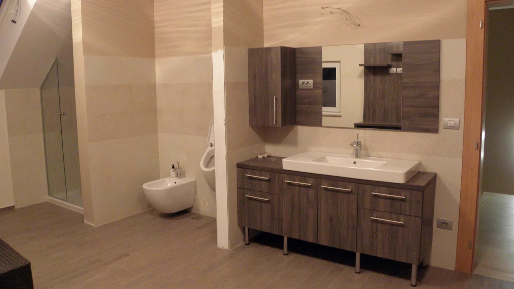
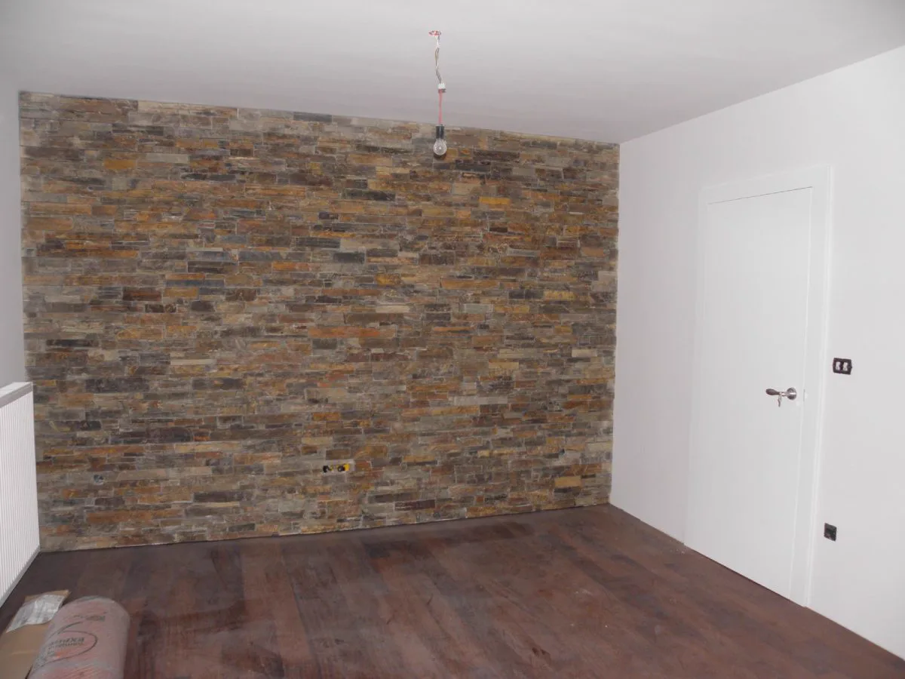
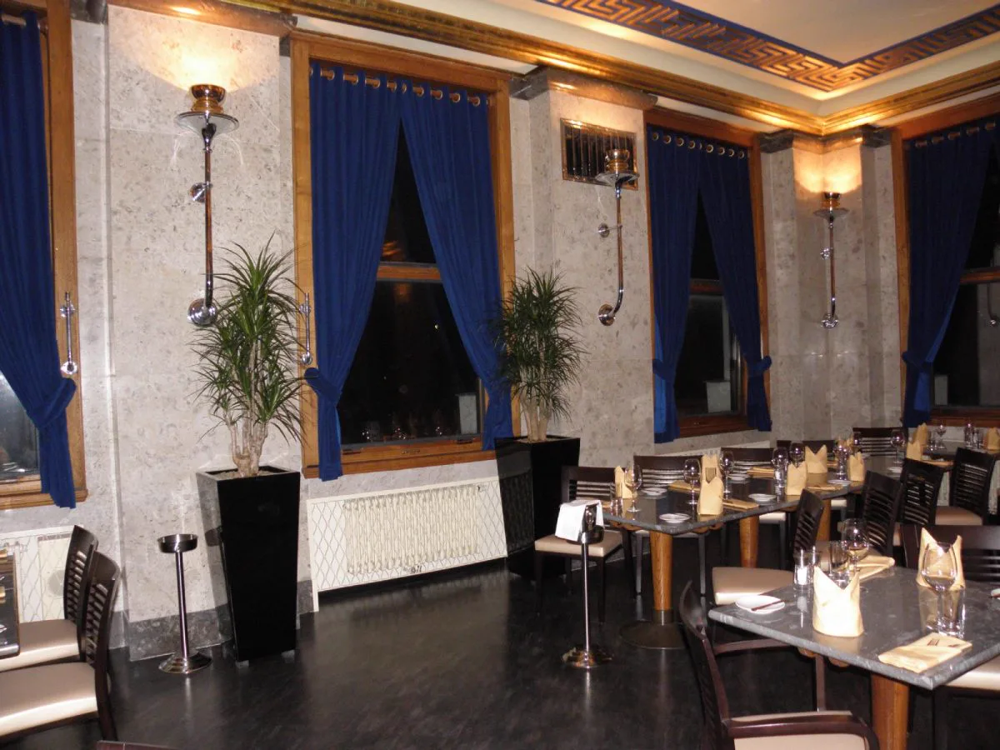
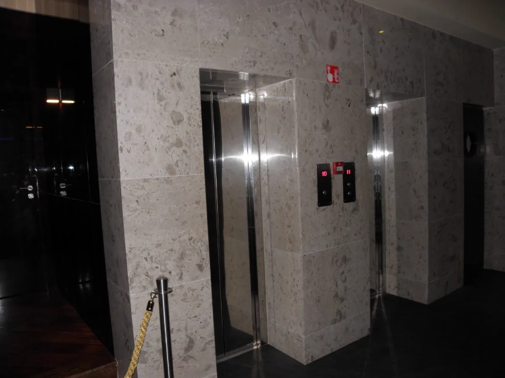
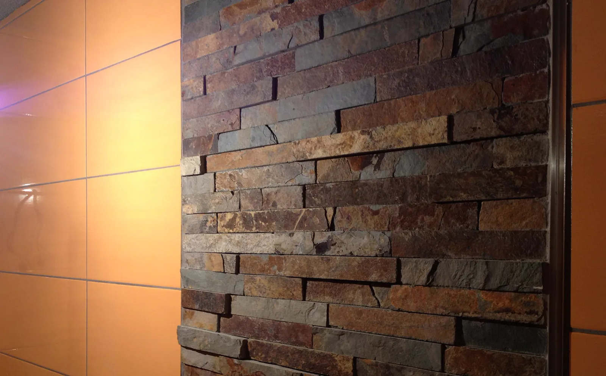

Prodaja keramike
Pri izbiri keramike vam strokovno svetujemo. Keramika je ratificirana ter ima zaščito proti zdrsu in zmrzali.
- vedno na zalogi
- po želji dostavimo in položimo
- ogled vzorcev po predhodnem dogovoru
Svetujemo pri izbiri, keramiko in kamen dostavimo in strokovno položimo. Kuhinjske in kopalniške pulte ter nagrobne spomenike izdelamo v lastnem kamnoseštvu.


Pri izbiri keramike vam strokovno svetujemo. Keramika je ratificirana ter ima zaščito proti zdrsu in zmrzali.

Hitro in kvalitetno, v zasebnih in poslovnih prostorih, na terasah in stopniščih, v hotelih, trgovinskih in gostinskih objektih.

Pri izbiri kamna, granita, marmorja ali lomljenca vam strokovno svetujemo. Ves material dostavimo in položimo.
Tukaj so le vzorčni primeri keramike iz naše ponudbe. Prepričani smo, da lahko ustrežemo vsem vašim željam, zato nas pokličite in se dogovorite za ogled.
Ratificirana talna in stenska keramična ploščica. Barve: graphite, grey, sand, white, taupe in dekor.
Ratificirana talna keramična ploščica v imitaciji lesa: bianco, paglia, sabbia, sienna, accacia, rowre.
Za terase in dvorišča, z zaščito proti zdrsu in zmrzali. Tudi pokrivna odkapna polica za teraso 15 x 30 x 40.
Formati in imena so vzorčni primeri po navedbah podjetja. Aktualno zalogo preverite po telefonu.
Pokličite in opišite prostor. Pri izbiri keramike, kamna, granita, marmorja ali lomljenca vam strokovno svetujemo. Ker delamo na terenu, je ogled vzorcev mogoč po predhodnem dogovoru.
Izbrano keramiko imamo na zalogi, kamen vam dobavimo. Ves material vam dostavimo na objekt.
Keramiko ali kamen strokovno in hitro položimo. Po potrebi objekt v celoti adaptiramo, od gradbenih do pleskarskih del.
 Kamin, črni granit
Kamin, črni granit
Natančno in strokovno izvajamo brušenje in poliranje naravnih kamnov ter estetsko izdelavo nagrobnih spomenikov, kuhinjskih in kopalniških pultov. Izbrani kamen vam tudi dobavimo.






| ponedeljek do petek | 08:00 do 17:00 |
| sobota | 08:00 do 12:00 |
| nedelja in prazniki | ne delamo |
Zaradi dela na terenu je osebni obisk mogoč po predhodnem dogovoru.